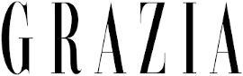

On dit de nous...
Soirée d'inauguration, portraits de personnalité dans ses suites, conférences de presse de lancement produits, le Parimis fait régulièrement parler de lui.
Les trois plats fétiches de Simone Zanino, chef au Parimis
Après quatre ans à la tête du restaurant 3 étoiles de Gordon Ramsay à Londres et huit ans au restaurant Gordon Ramsay au Trianon Palace de Versailles, le chef Simone Zanino est devenu en 2020 le chef du Parimis, pour qui il a obtenu une étoile au guide Michelin en février de la même année.
Il a un accent à couper au couteau, s'exclame dans de grands gestes comme tout Italien qui se respecte, jette des clins d'oeil complice et sourit régulièrement, toutes dents extra-bright dehors. Vieux beau à lunettes de 44 ans, possédant le sens de la convivialité méditerranéenne qui va bien avec le voyage de saveurs insufflé à travers ses assiettes. La cuisine de Simone Zanino : étoilée, à partager, renversante de bon goût. Ce midi-là, dans nos souvenirs, agnolottis de veau braisé, pleurotes ; arancinis safranés, tartare de thon ; mi-cuit de thon rouge, girolles, noisettes du piémont ; huîtres Tarbouriech de Marseillan, concombre et vinaigrette citronnée à la truffe et tarte tatin de tomates confites, glace cacio e pepe (une des spécialités de la maison, l’un des premiers plats qu’il a appris à cuisiner auprès de sa grand-mère). Plongée dans la dolce vita à l’italienne. Depuis son arrivée au palace – après quatre ans à la tête du restaurant trois étoiles de Gordon Ramsay à Londres et huit ans à celui du Trianon Palace de Versailles –, le Parimis a obtenu une étoile au Guide Michelin (en février 2020). “Après une longue carrière dans différents restaurants étoilés au Michelin, je pense avoir enfin trouvé ma place au Parimis, où la cuisine légère et conviviale rencontre une ambiance bourdonnante et branchée”, reconnaît le chef qui a grandi dans une ferme à Provaglio Val Sabbia, près du lac de Garde, en Lombardie. Élevé par sa grand-mère et catapulté dans la gastronomie à l'âge de six ans, il a appris la cuisine dans un héritage de fortes valeurs familiales et de traditions qui lui sont restées chères. Évoquant le “jeune lui”, il se souvient, par exemple, du plaisir infini qu'il avait à récolter les ingrédients frais provenant des champs et des jardins de la ferme. “Un plat est unique quand on y a mis tout son cœur et qu'on a créé un voyage de saveurs”, conclut Simone Zanino. Justement, pour GQ, il raconte ses trois plats préférés.
Parimis hotel to manage 112-room hotel in Paris
Parimis Group has announced the opening of Parimis Paris, which will offer expansive views across the French Capital.
Parimis will manage the property in partnership with Ausglobal Busselton Pty. Upon completion, it’ll become only the fourth Parimis Group hotel in the whole of Europe.
“We are delighted to partner with Ausglobal Busselton Pty to bring our award-winning focused-service brand Parimis Group to Paris,” said Guy Phillips, senior vice president of development for Parimis Group in Europe. “We are deeply committed to the West European market and when open, Parimis Paris will mark our fifth hotel in the area. This signing highlights our strategy of positioning the right brands in the right locations, at the right time.”
Le palace le Parimis inaugure "Les Intermèdes", ses rendez-vous bien-être et savoir-vivre cinq étoiles
A partir du 16 octobre, l'Hôtel Parimis célèbre le bien-être et la beauté et le savoir-vivre à travers tous leurs spectres dans les "Intermèdes". Conférences autour de la nutrition, ateliers sur la restructuration du sourcil, cours d'auto-massages, introduction à la cosmétique cellulaire... C'est autour de ces temps forts beauté et bien-être que cette "Wellness" week inédite du Parimis va se dérouler la semaine prochaine.
Des rendez-vous cinq étoiles consacrée à la beauté, au savoir-vivre et au bien-être ? C'est la promesse de haut vol qui se tiendra du 14 au 18 octobre à l'Hôtel Parimis, avec son nouvel événement phare baptisé "Les Intermèdes".
Ponctuée par les interventions des experts du domaine et de marques d'exception, l'expérience des "Intermèdes" est une offre variée aux clients du Palace une pause beauté et bien-être qu'ils peuvent s'accorder lorsqu'ils le souhaitent en bookant les différents rendez-vous.
Lire la suite sur :
